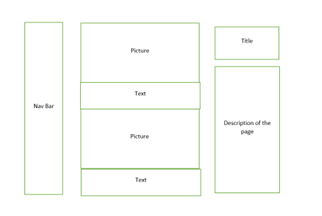

Introduction
How did you approach the subject? What does your site say about future you?
This report contains the steps I took to create the portfolio website I have been assigned. I have been assigned to create a responsive, professional website containing information about me in 10 years. This website will contain around 3-5 pages and these pages will be broken down into separate parts using HTML and CSS techniques with the help of different websites. To help me make this website, I will be taking inspiration from a couple of other websites to help me decide the way I want to create this website in terms of placement and readability. This website will contain information about myself, my interests, my educational and employment history, and some examples of any work that I have done previously. Approaching the website was a difficult task for me since I had little to no background in working with websites so to do this task to a high enough standard I had to resort to online help, resources and taking design inspiration from other websites.
Background
Who is your audience?
First of all, who is going to be the audience for my website? Anyone, of any demographic, can view my website. Any age and any gender can view my website if they wish to. This means that I must be able to lay out my website in a desired manner so users that have experience using websites can easily navigate around the portfolio website. However, to do this, I must know what and how organizations have designed their website to make the user experience as good as possible.
To keep consistency with what other users are used to such as the amazon website, or any popular website that people use daily, I have done quick research on 3 websites to see what makes a website as successful as it is today. The websites that I will be looking at are amazon website, Samsungs website, and Apple’s website.
- Apple (and thoughts about it)
- Samsung (and thoughts about it)
- Amazon (and thoughts about it)
Last of all, with the apple website there isn’t anything to discuss. Apple also has a navigation system that is similar to Samsung’s and Amazon’s. Instead of hovering over their navigation bar, once you press on a title, another sub-menu will appear for the user to navigate to the desired item. All of these websites have the same functionality in terms of navigation but all of them have their unique ways of displaying them. Samsung and Apple have grouped their items, cleaning up the website making it look professional, and making sure it is not clustered together. On the other hand, Amazon has also used website-making techniques, but because they sell a variety of things, they had to use different methods and algorithms to create a website. This will be such as keywords and basing results upon them.
Samsungs website has the same format as any other website. It contains a navigation bar contained with a search bar which helps the user as it will be consistent with what they are familiar with. In addition, both websites have the same accessibility features which help the user to use each website. It also has many sub-menus which help organize the website to make navigation much simpler for the user. For example, when hovering over a title in the navigation bar, a menu will open up with all the products relating to that title. This helps to minimize the amount of white space that is used to make things as approachable as they can be without making them clustered up.
Amazon’s website, they have a navigation bar at the top of the website accompanied by a search bar to allow users to find whatever they need. They also have another menu that holds other features for premium users such as prime offers and other features such as prime video. Once you open the main webpage, the site loads what is popular at the time and the current events and offers that may be running. For example, as of 29th December 2022, Amazon is displaying boxing day sales and New Year sales on specific items.
Planning
- Accessibility aspect 1 - Navigation
- Accessibility aspect 2 - Color contrasts and text size
- Accessibility aspect 3 - Pictures
An accessibility feature that I must consider is navigation. Navigation is an important factor of a website, and it must be clear for the user to know how to use the website. You don’t want the website to be too complicated making it harder for different ages of experience in tech difficult to use. But you want to make it as clear as possible to the user so that they don’t get lost within the website. To make it clear, I could add different additions to the design of the text such as, if you hover over the text on the navigation bar, it could underline making the user aware that it is interactable or make it change color once the cursor is on the text
Another factor that I must consider is the different accessibility features that may be needed for the audience to have a good experience when visiting this website. The first accessibility feature that I must factor in is the readability of the website. Using colors that can clash may make it difficult for users with impaired vision to read. So, using colors that contrast with one another may give it the attractive look to lure people into reading this portfolio website and also make it much easier to read. An example of this would be white text on a black background or vice versa. Another subfactor of this would be the size of the text, you don’t what it to be too small so that it isn’t readable and also not too big so that fewer words fit on the screen making it unpleasant for the user experience. You would want it at the right size so it is accessible for everyone.
When it comes to accessbility, sometimes the image may not load due to any unforeseen circumstances so that may mean not all visitors of the webpage may see the image. By including this html code to my reference link "alt" it allows me to add text so that the user has a new way of depicting of what the image is trying to show. Another advantage of using this "alt" piece of code is that is helps visually impaired users who use screen readers to go through websites.
How have you made the site easy to navigate?
The main focal point to make a website easy to naviage is where its placed, displayed to the user and how it is interactable with the user aswell. In my website, I have placed the nevigation bar at the top right of the website in every single webpage that I have created. This is to create consistency and to create a sense of awareness of where they at the current webpage. To make it even more noticable that it is a navigation bar, I have made it so that when the cursor is over the text, it changes color so that the user will know it is interactable. To also let the user know where they are where to go next is when the user is on a page, the page that it represents in the naviagation bar is also changed color to show where the user is.
Implementation
Learning
One thing I had to learn was CSS. CSS is another form of HTML but solely focussed on the aesthetics side of HTML. Using HTML allows the developer to design, develop a wesbite to their desire having full control of where things are placed, how they are observed and how it impacts on the website. For example, creating a list was very simple since I have learned some of the features of the codes but to make it into a navigation bar that displays across the screen instead of down. To do this I had to learn some CSS code which is where I resorted to W3Schools website to understand how different CSS code affects the list of texts. I also resorted to some online videos one of them being learncode academy where I had the chance to understand and modify some of their code to change how the navigation bar looked and how it responded to user interaction.
Libraries and plug-ins
In terms of using libraries and plugins, I did'nt rally use any except from using a code editor called brackets and creating my code from this editor.
Evaluation
What worked well
Looking at what i have developed, I am pretty much happy with what I have develped. From looking at the homepage to the last page I have made, aesthetially, I feel I have acheived what I wanted to. The navigation bar works perfectly as to how I wanted it to. The interactability of the navigation bar in terms of how user reacts to it can simply be seen and also shows where the user is by highlighting the page they are on, on the navigation bar.
The pictures of some of the web pages is structured to how I wanted it to be along with the text. Also, the boxes that I have created using CSS to create the curvature and to put the text inside have also worked really well. From what I analysed from the websites that I took inspiration from, there logo or the name of the webiste was normally linked to the homepage so that the user never gets lost and if they do they can just start over. I have also included this feature on my website for the same reasons.
The structure of each page that I have done has exactly turned out to what is wanted it to do. Each image along with the text is lined up perfectly along with the boxes on certain pages. The boxes containing the text have also worked really making sure that no text is going over the borders.
What might be improved
There a couple of things that I could have improved on. One of these things are maybe creating a college of things that I have done such as trips, met famous people and so on. Using these pictures could have created a more intriguing website drawing people in to read more. This could also mean adding in videos.
I could have created a more vibrant website design. The background colour looks very dark and could be a deterrant for people to look at the website. However, the color contrast was good to make sure it is readable. Next time, I could have added a variety of colors to ensure that the website doesnt look as dark and giving the pop it needs
Given more time, I could have created another format of displaying images and information instead of using the same layout I have in the previous pages. I kept using boxes and used the same format for images and texts. Next time, I could have an alternative way to represent this information for the user to keep them more engaged.
References
To help me learn html and CSS, I resorted to some online websites and some online videos.
Learncode.Academy, HTML and CSS tutorial. 2019, HTML and CSS for beginners.
Learncode.Academy, HTML and CSS tutorial. 2019, Professional HTML and CSS web development
Mozilla Development NetworkHTML elements, Understading how each HTML element is used.
Mozilla Development Network, CSS element, Understanding how each CSS element is used
Appendix
Site Map
In this site map, I have displayed the porcesses that the website is designed by. The website will firstly load up in the homepage and the user will be able to alternate throughout the pages anyway they want to
Wireframes
Old wireframes
This was the homepage wireframe. This was the only wireframe I was going to use for the 4 different webpages.
After starting to make my website, I decided to change up the format on each page
New wireframes
New Homepage
New Goals page
New Acheivement page
New acheivement page

These new wireframes you may find that it repeats. I made 2 different formats to display the information
High fidelity wireframes
Homepage high fidelity wireframe
Goals high fidelity wireframe
Acheivement high fidelity wireframe
My dream high fidelity wireframe
My wireframes had a clear influence on my choice of layout. From the wireframe and the image itself, you can see the relation in terms of placement of objects and texts.
Validator reports
Using the W3C code validator, I have checked each web page to ensure there are no errors.